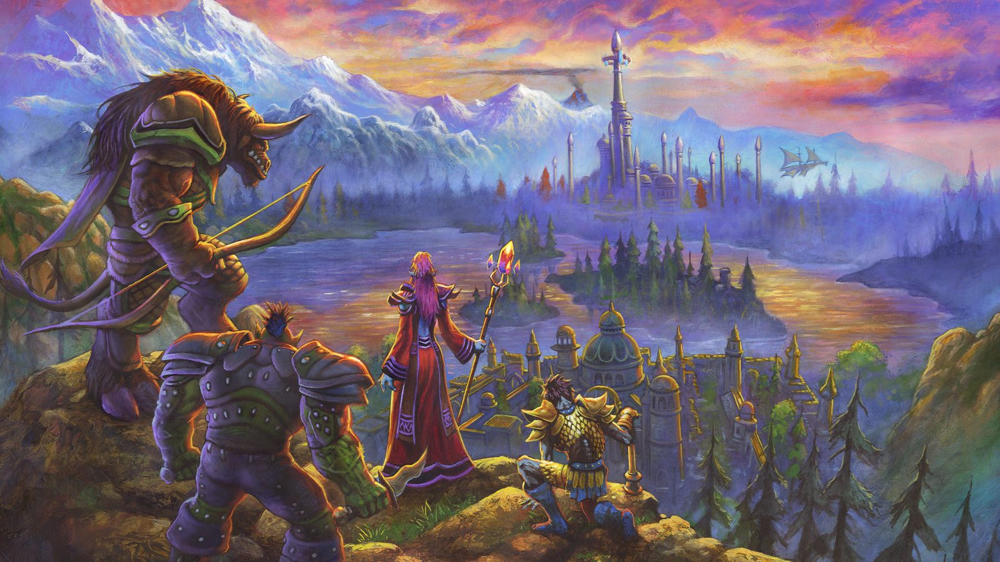
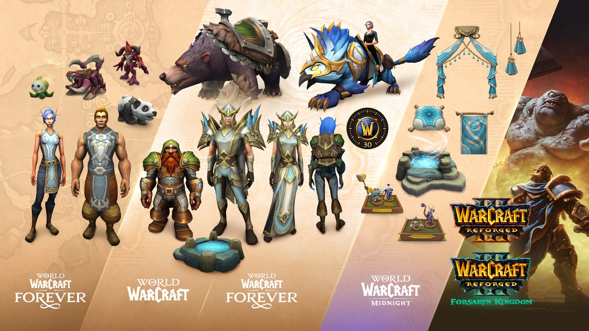

Le « Classic+ » que les joueurs attendaient est sorti dans la nuit du 4 au 5 novembre 2026. C'est lui qui a coupé le Conseil en deux : voilà ce qu'il contient, et où en est la Grande Trahison.

Les sages partis en Azeroth, classés par niveau. Les niveaux viennent de Blizzard et se mettent à jour quand le joueur se déconnecte du jeu.
La fiche de chaque personnage indiqué par les sages dans leur profil.
Chargement…
Une troisième version de World of Warcraft, à côté du jeu actuel et de Classic : le monde d'origine, niveau 60, mais avec du contenu inédit.
Ce que Blizzard a changé depuis la sortie, mis à jour le 19 novembre.
Sources : correctifs officiels de Blizzard, correctifs du 17 novembre, LFCarry et Space4Games.

Depuis l'ouverture des serveurs, une partie du Conseil a quitté la Faille pour Azeroth. Le compteur tourne jusqu'à leur retour.
Sources : Journal du Geek et T'as Pas 1 Po ?. Site de fan, sans lien avec Blizzard Entertainment.